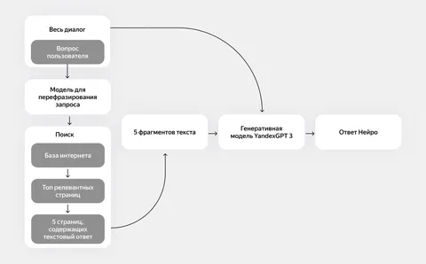

Нейро — как он работает
Недавно Яндекс запустил Нейро — сервис для поиска ответов на вопросы, заданные на естественном языке. А в основе всего лежат LLM. Кратко расскажем, как устроен сервис и в чём его особенности.
Предположим, вы хотите приготовить щи — рецепт простой, но тут нужна сноровка. Да ещё неплохо бы понять, из чего вообще варят суп этот суп. Вы открываете браузер, вбиваете в поисковике что-то вроде «рецепт щей» и получаете сотни ссылок на самые разные сайты. Блоги, кулинарные сообщества и порталы — всюду масса вариаций блюда, ведь каждый готовит его по-своему.
А вот, что происходит, если вы обратитесь за помощью к Нейро. Скорее всего, вопрос, который вы ему зададите, будет звучать «Как приготовить щи?». Рефразер переформулирует его в поисковый запрос с помощью LLM и получит 20 наиболее релевантных источников. Из них Нейро выберет 5 самых и на их основе YandexGPT 3 составит подробный ответ на естественном языке. Но дальше становится только интереснее.
Скажем, вы обнаружили, что дома нет капусты. В таком случае Нейро достаточно написать что-то вроде «а без капусты?» — и сервис тут же предложит подходящий вариант. Не нужно заново писать новый вопрос, ведь Нейро хранит контекст диалога с пользователем, что дает возможность задавать уточняющие вопросы. Можно даже попросить показать рецепт щей без воды.
В Нейро работают несколько моделей, обученных на разных датасетах, чтобы давать наиболее четкие и релевантные ответы. Узнать больше о том, как устроен сервис и как его разрабатывали — со всеми техническими подробностями — вы можете из статьи на Хабре. А здесь в комментариях поделитесь своими впечатлениями от Нейро!
ML Underhood
Недавно Яндекс запустил Нейро — сервис для поиска ответов на вопросы, заданные на естественном языке. А в основе всего лежат LLM. Кратко расскажем, как устроен сервис и в чём его особенности.
Предположим, вы хотите приготовить щи — рецепт простой, но тут нужна сноровка. Да ещё неплохо бы понять, из чего вообще варят суп этот суп. Вы открываете браузер, вбиваете в поисковике что-то вроде «рецепт щей» и получаете сотни ссылок на самые разные сайты. Блоги, кулинарные сообщества и порталы — всюду масса вариаций блюда, ведь каждый готовит его по-своему.
А вот, что происходит, если вы обратитесь за помощью к Нейро. Скорее всего, вопрос, который вы ему зададите, будет звучать «Как приготовить щи?». Рефразер переформулирует его в поисковый запрос с помощью LLM и получит 20 наиболее релевантных источников. Из них Нейро выберет 5 самых и на их основе YandexGPT 3 составит подробный ответ на естественном языке. Но дальше становится только интереснее.
Скажем, вы обнаружили, что дома нет капусты. В таком случае Нейро достаточно написать что-то вроде «а без капусты?» — и сервис тут же предложит подходящий вариант. Не нужно заново писать новый вопрос, ведь Нейро хранит контекст диалога с пользователем, что дает возможность задавать уточняющие вопросы. Можно даже попросить показать рецепт щей без воды.
В Нейро работают несколько моделей, обученных на разных датасетах, чтобы давать наиболее четкие и релевантные ответы. Узнать больше о том, как устроен сервис и как его разрабатывали — со всеми техническими подробностями — вы можете из статьи на Хабре. А здесь в комментариях поделитесь своими впечатлениями от Нейро!
ML Underhood

1 315 просмотров · 4 реакций
Открыть в Telegram · Открыть пост на сайте